| 了解更多 |
瓶子是一种由不透水材料（如玻璃、塑料或铝）制成的窄颈容器，形状和尺寸各异，用于储存和运输液体。在装瓶生产线上，瓶子的口部可以用内塞、外瓶盖、封盖或感应封口进行密封。[ 1 ]
词源
最早见于14世纪。英语单词bottle源于古法语词boteille，源于通俗拉丁语 butticula，源于晚期拉丁语 buttis（“木桶”），后者是希腊语βοῦττις ( bouttis )（“容器”）的拉丁化版本。 [ 2 ] [ 3 ]
类型
玻璃
葡萄酒
玻璃瓶代表了葡萄酒历史上的一个重要发展，因为当它与软木塞等高品质瓶塞结合使用时，可以使葡萄酒长期陈酿。玻璃具备长期储存所需的所有特性。最终，它催生了“酒庄装瓶”的出现，即酒庄的葡萄酒在产地而非酒商处装瓶。在此之前，葡萄酒通常按桶出售（更早之前是双耳细颈瓶），并且只有在酒商的商店里才能装瓶（即便有装瓶）。这为欺诈和掺假留下了大量且经常被滥用的机会，因为消费者不得不信任酒商对酒的内容物的真实性。据认为，大多数在葡萄酒产区以外消费的葡萄酒都以某种方式被篡改过。此外，并非所有酒商在装瓶时都会小心避免氧化或污染，导致瓶装葡萄酒的差异很大。尤其是在波特酒方面，一些尽职尽责的酒商装瓶的陈年波特酒即使在今天也能卖出更高的价格。为了避免这些问题，大多数优质葡萄酒都是在产地装瓶的（包括所有波特酒，自 1974 年以来）。
葡萄酒瓶的尺寸和形状多种多样。以下是一些已知的形状：
- “波尔多”酒瓶：这种酒瓶瓶壁大致呈直线，瓶肩呈弧形，便于收集沉淀物，也最容易堆叠。传统上，这种酒瓶在波尔多地区使用，但现在世界各地都使用，这可能是最常见的酒瓶类型。
- “勃艮第”：传统上用于勃艮第葡萄酒，其侧面逐渐变细，高度约为 2/3，形成一个短圆柱形部分，并且没有肩部。
- “香槟瓶”：传统上用于盛装香槟酒，类似于勃艮第酒瓶，但底部更宽，结构更重，以承受起泡酒碳酸化产生的压力。
颈椎病
 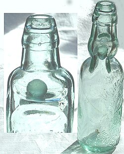
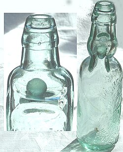
1872年，英国软饮料制造商 Hiram Codd（来自伦敦坎伯韦尔）设计并获得了一种专为碳酸饮料设计的瓶子的专利。Codd颈瓶的设计和制造目的是在瓶颈处封入一颗弹珠和一个橡胶 垫圈/密封垫。将瓶子倒置灌装，瓶内气压将弹珠压向垫圈，从而将碳酸密封。瓶子被挤压成一种特殊形状，如左图所示，以便形成一个腔室，将弹珠推入其中即可打开瓶子。这可以防止饮料倒出时弹珠堵塞瓶颈。
推出后不久，这种瓶子便在软饮料和酿酒行业（主要在欧洲、亚洲和澳大拉西亚）中大受欢迎，尽管一些饮酒者对使用这种瓶子不屑一顾。“codswallop ”一词的词源之一源于用科德瓶（Codd Bottle）出售的啤酒，但这通常被认为是民间词源。[ 4 ]
这种瓶子定期生产了几十年，但使用量逐渐减少。由于孩子们为了取出里面的弹珠而砸碎瓶子，它们相对稀少，并成为收藏品，尤其是在英国。如今，一个钴蓝色的科德瓶在拍卖会上能拍出数百英镑的高价。科德瓶颈的设计至今仍用于日本软饮料“拉姆尼”（Ramune）和印度饮料“邦塔”（Banta）。[ 5 ]
塑料
| 了解更多 |
塑料在拉伸吹塑成型制造过程中具有应变导向性。塑料瓶通常用于储存水、软饮料、机油、食用油、药品、洗发水、牛奶和墨水等液体。其尺寸范围从非常小的样品瓶到非常大的玻璃瓶。塑料瓶相对于玻璃瓶的主要优势在于其在生产和运输过程中都具有出色的抗破损性，并且重量轻且生产成本低。其缺点包括普遍存在的塑料污染。
铝
铝瓶（Aluminum Bottle）是指用铝（或铝，英式英语除外）制成的瓶子。在一些国家，它也被称为“瓶罐”（Bottle Can）。通常用于盛装啤酒、软饮料或葡萄酒。
热水
热水袋是一种装满热水的瓶子，用于取暖。热水袋可以由多种材料制成，最常见的是橡胶，但历史上也曾使用较硬的材料制成，例如金属、玻璃、陶器或木材。
画廊


 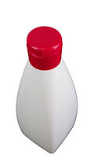
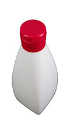


.jpg?_x_tr_sl=en&_x_tr_tl=zh-CN&_x_tr_hl=zh-CN&_x_tr_pto=wapp) 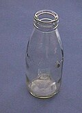
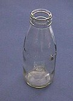 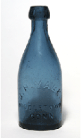
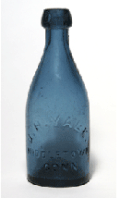

.jpg?_x_tr_sl=en&_x_tr_tl=zh-CN&_x_tr_hl=zh-CN&_x_tr_pto=wapp) 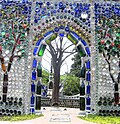
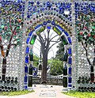.jpg?_x_tr_sl=en&_x_tr_tl=zh-CN&_x_tr_hl=zh-CN&_x_tr_pto=wapp) 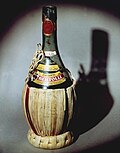
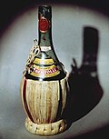


{kind=link}
{kind=link}
杂记
参见
笔记
参考
- Soroka，W，《包装技术基础》，IoPP，2002， ISBN 1-930268-25-4
- Yam, KL，《包装技术百科全书》，John Wiley & Sons，2009， ISBN 978-0-470-08704-6
外部链接
-

 维基共享资源中与瓶子相关的媒体
维基共享资源中与瓶子相关的媒体